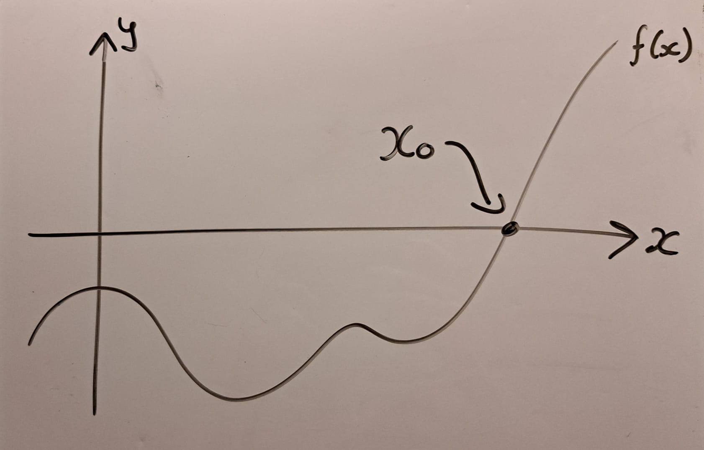
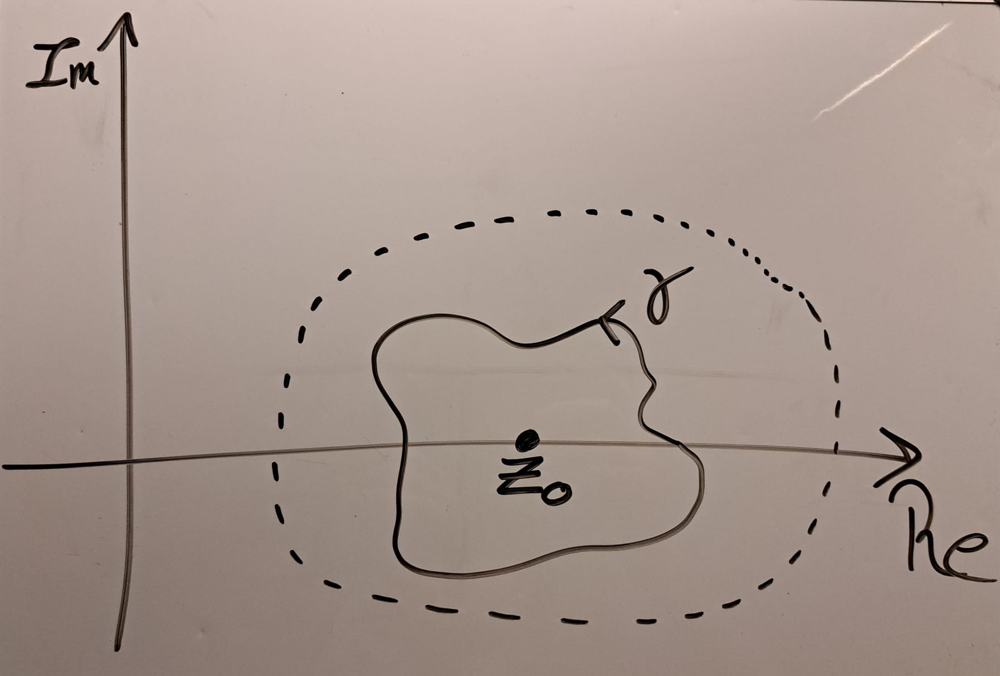

Here is where I will shove some maths that I find interesting. The problems I have actually worked on will be put in the Projects section.
This is a really bad method.
Root-finding is the problem of finding where a function is zero. In the diagram below, it means finding where the curve crosses the \(x\)-axis. This location is called the root, and is denoted \(x_0\). Sometimes, we cannot solve this exactly, and must turn to numerically approximating it. There are many good methods to do this. Using \(N\) evaluations, the bisection method can achieve an error that is \(\mathcal{O}(2^{-N})\), and assuming the function is 'nice', there are much faster methods available.
To use this new method, we must place several strong assumptions on the function \(f\). First, there exists a complex extension of \(f\) on some known open subset \(U\subset\mathbb{C}\) that contains the root \(z_0\) we want. Second, we can construct some loop \(\gamma\) within \(U\) that encloses \(z_0\). We also need the winding number of \(\gamma\) about \(z_0\) to be 1, and for \(z_0\) to be zero of order one of \(f\).
Here is a schematic diagram of the complex plane around the root \(z_0\). The dashed line represents the boundary of \(U\). Within this region, \(f\) is assumed to be holomorphic (very very smooth and nice). The loop \(\gamma\) is within \(U\), and goes around \(z_0\) once, counter-clockwise.
Then, if we integrate \(z/f(z)\) and \(1/f(z)\) along the curve \(\gamma\), the resulting ratio will be the root we are looking for!
$$\left.\oint_\gamma\frac{z}{f(z)}dz \right/ \oint_\gamma\frac{1}{f(z)}dz = z_0 $$This is called a coutour integral, where \(\gamma\) is the contour. Evaluating these can be fun, but most analytic methods revolve around knowing the singularities of the integrand. That is, where the function to be integrated diverges. In this case, there is exactly one, and it is \(z_0\)... but we don't know where it is! That is the whole point! So we must turn to numerical approximation.
This still doesn't sound too awful. Just numerically approximate the integral, and this will still approximate the root. Using a smooth contour \(\gamma\), and numerically integrating using the trapezoid method with \(N\) evaluations, we can show that the resulting error will drop faster than all powers of \(N\). What we cannot do, however, is guarantee that the error will drop faster than that of the bisection method. Which is embarrassing, as that is perhaps the most simple root-finding algorithm, and this is far, far more expensive!
So from both analytical and numerical points of view, this method is useless. But because it pops out of some really nice maths, it gets rediscovered from time to time. It got a bit of media fanfare when it was used offhand in this paper from 2020. The author derived a transcendental equation, the root of which was a number that solved the Grazing Goat problem . At the end, the author constructs such an integral from the equation, and claims this is a "closed-form solution" for the root.
In the few years since, some physicists ahve applied this approach to derive 'explicit solutions' to famous transcendental equations in theoretical physics, such as Kepler's equation and Homologous Collapse. For example, Kepler's Goat Herd and A Uniform Spherical Goat (Problem). As you can tell from the names of the papers, these are probably mostly tongue-in-cheek. But I have strong opinions on this — it is disingenuous to call these 'explicit' or 'closed-form' solutions. Unless you can solve the integrals analytically, this is only a numerical root-finding method, and a pretty bad one at that.
Anyway, despite the fact the method is terrible, I did spend some time thinking about how to improve it. The rough goal is to steel-man the method — to make a stronger version of it, and then to demonstrate this stronger version is still bad. (If you want some spoilers, ask me.)